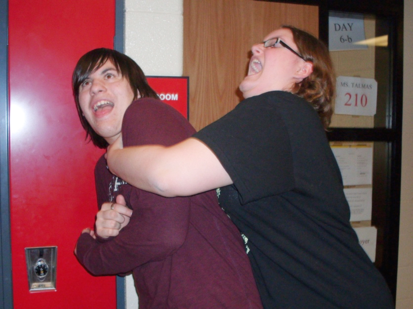
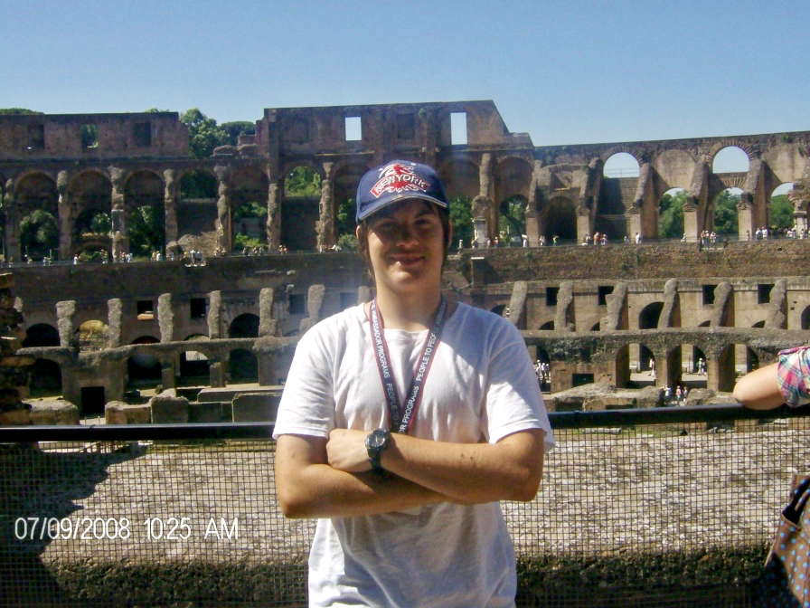
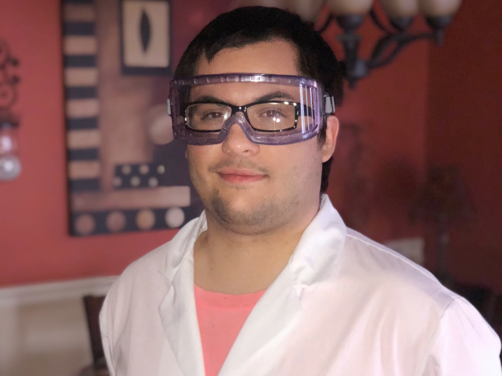
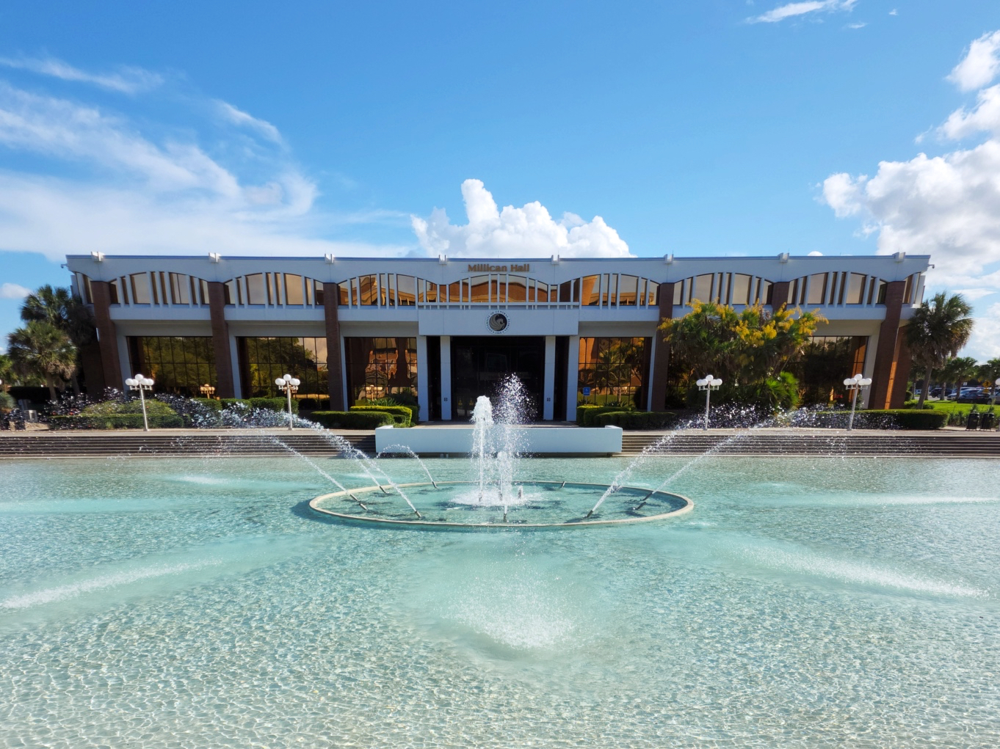
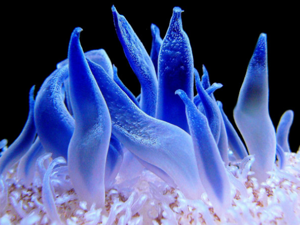
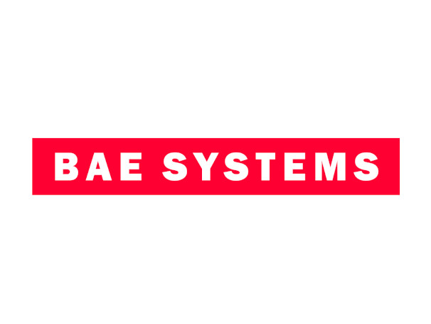
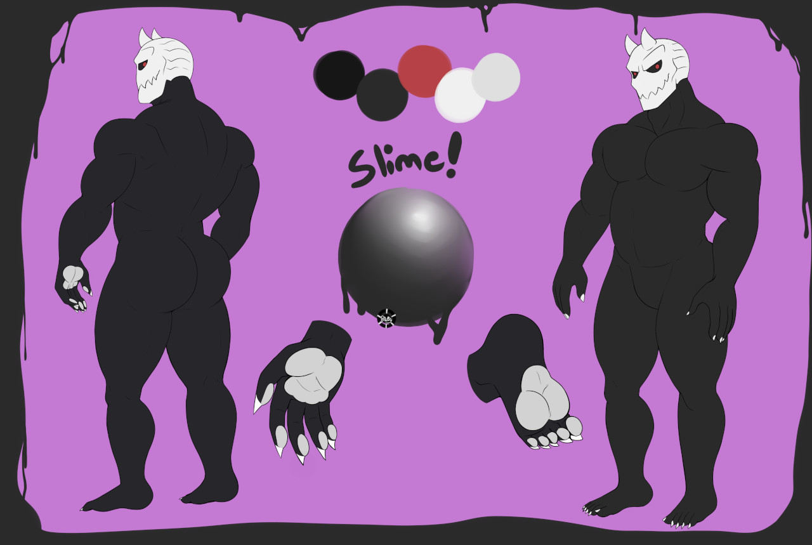

Welcome to my website! This entire site was created purely with HTML and CSS.
There is no React-App, Node, Javascript, build tools... Nothing is compiled nor interpreted here.
My name is Harry James Hocker and I am a professional full-stack developer. Having had an interest in computers since I was a child, I have used my abilities in problem-solving to get where I am today. During my free time, I like to mess with code and play video games. Feel free to contact me any time. Though I may not respond right away, I try to be friendly! My favorite food is sushi, and I love rainy days.

From preschool to high school, I have moved around the United States of America many times. Starting out in Washington state, my place of birth, I relocated into Oregon at only the age of three. In 2002, the family relocated from Oregon to Pennsylvania. Finally, I moved to Florida to complete my high school education.

During the Summer of 2008, I was part of the People to People Student Ambassador program. During this program, I traveled to Greece, Italy, and France. For each visit, I was required to adapt and learn the basics of both the cultures and language of each location. This program taught me invaluable lessons about humanities and tolerance, as well as develop international social skills. Having the ability to experience all the different food and cultures is something I wish everyone could do!
For the beginning of my professional life in 2011, I worked in retail at Spencer's Gifts for about six years. This long-term experience in retail taught me how to bring the best customer service. Along the way, I learned more about myself; and I learned what I enjoyed doing. Though I had a blast working in retail, it was time to look for a permanent career. I left Spencer's Gifts on amicable terms to pursue a higher education.

To start my higher education, I studied at the St. Petersburg Community College in Clearwater, Florida. Some of my major accomplishments include receiving my AA with a 4.0 GPA and receiving honors awards from the Physical Sciences department. During my time at SPC, I worked in the Physical Sciences labs working with dangerous chemicals, while following proper procedures and instructions. Graduating with my Associates in 2019, it was time to pursue University.

UCF was my institute of choice for pursuing a Chemistry degree, but I ended up finding love in Computer Science. Moving from a community college to a huge university was an indescribable experience. Working with the top professionals in their fields, I managed to graduate in Fall 2023 with a Bachelors Degree in Computer Science. During my time, I pushed myself to the limit and succeeded in ways that I never thought possible!

During University, I worked for a small business called Tanknicians as the lead backend developer. Tanknicians is a small business that provides aquarium services to customers in Florida. I spent the entirety of 2023 designing and coding the backend API, services, and database. This experience taught me all about Typescript, Express, Prisma, JWTs, Environment Variables, and Planetscale.
Immediately after graduating University, I began work at TekSynap as a full stack developer. TekSynap primarily focuses on the IT field for government and defense. My role was to maintain and develop pages for different sectors. Duties included having meetings with stakeholders, performing the job as a functionalist, and developing new web services on a week-by-week basis.

Currently, I am salaried with BAE Systems as an Application Developer II. From their own website: "BAE provides some of the world's most advanced, technology-led defence, aerospace and security solutions. We employ a skilled workforce of around 107,000 people in more than 40 countries." I am very proud to be part of BAE Systems. My role has me working on .NET Applications using Vue and Typescript to turn outdated pages into cloud-based web applications.
